Arabesque interface is accessible via its general home page.
Arabesque Home page
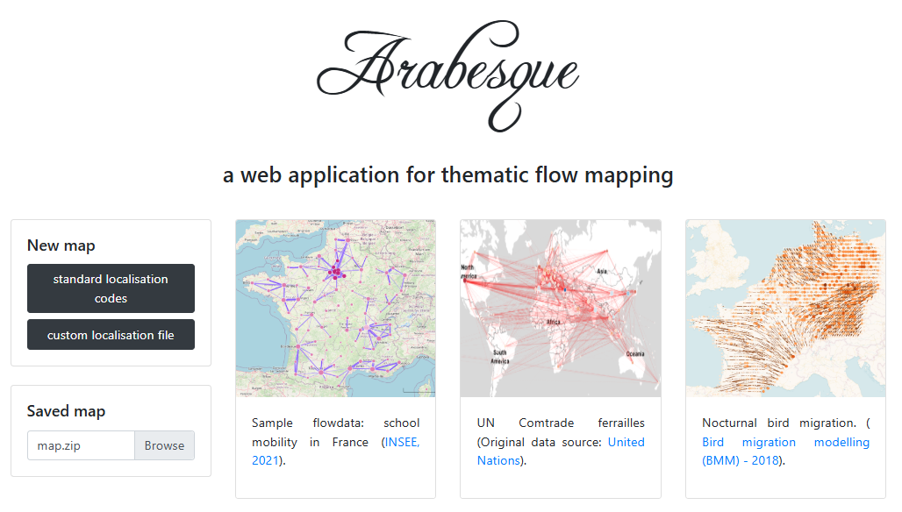
Through this home page, you can:
- Start a new flowmap by loading at least your flow data. See Data importation chapter.

General structure
The main banner
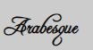
Return to the home page to start a new view.
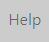
Access to documentation
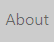
Access to credits
Access to documentationgo to the Gustave Eiffel University home page
go to the Geographic flow visualisation programme home page
go go to the home page of the github/com/glowiz
The three panels
Arabesque interface is composed of three panels.
- The central panel is for displaying the map - centered in France here.
The two side panels are for playing with information:
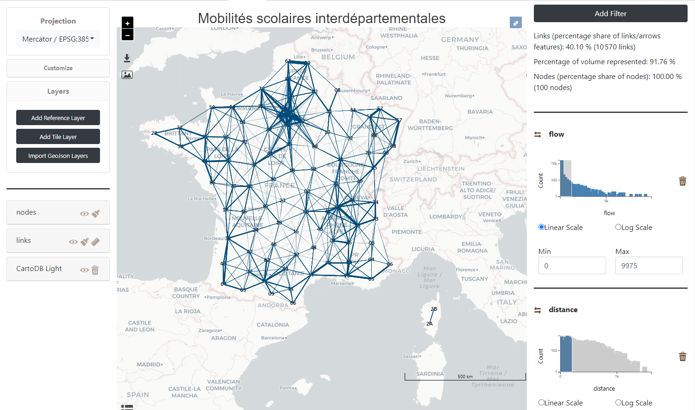
The central panel
The central part of Arabesque corresponds to the map view. It results from the choice of the layers to be displayed (from the left panel) and the filtering of the values of the links and nodes (from the right panel).
This central panel also presents different buttons allowing the implementation of primary actions.
Primary actions with butons
The white page of Arabesque is decorated with blue action buttons.
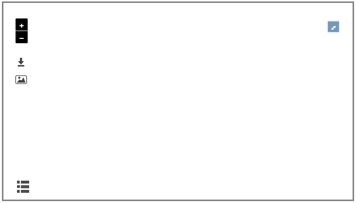
Details of the different buttons
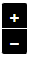
Successively zoom in/out - the same way as with the mouse wheel.
Save the project in .ZIP for later use.
Export the map in .PDF vector format including legends in the bottom of the page.
Show/hide the legend.
Primary legend
A legend is automatically generated for each map for nodes and links plot.
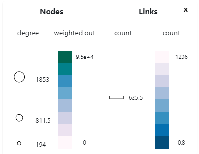
The symbolization elements (size, color and opacity) of the nodes and links are included in the legend. Here (for a default map), it is the volume of flows and the degree of places that are represented.
The geographic panel
The left panel is to design the map:
dealing with the map background as the geographical/geometrical layers: Arabesque reference layer, Tile Layer or your own geojson layers
customize the design/style of the nodes and links features map.
The management of geographic information is composed of three sub-sections:
Actions on the background of the map are for changing projections of the current map and/or to add other layers : remote or personal one.
See Design map background section.
Actions on the design/style is to set the parameters for the geometry of the lines/arrows and their semiology
See Design flowmap signs section.
The geographic layer manager
In practice, a map is composed by several layer such as the bounding boxes, the graticules, the countries of land. All can be loaded in the map design background section Layers.
They then appear in the layer manager sub-panel, one above the other as shown below.
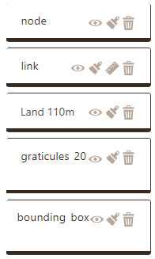
The present layers are all available on the map - but not necessarily all of them are visible.
The layers on the view are positioned in an order that affects their visibility. The top layer will be visible in the foreground.
Layer rearrangement
The drawing of the different layers and their objects can be finely parameterized in Arabesque, in order to take into account the possible complexity of the information (density of the matrix) which requires a particular management of the superimpositions and the arrangements of the layers of links and nodes.
In the example below, the largest links are placed in the foregroundby default, while the largest circles are not. After their rearrangement, the largest links are background and their color intensity has been changed (See Chapter Designing flowmap signs).
EXAMPLE: rearrangement of nodes and links.
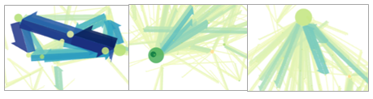
The position of the layers above and below (foreground/lowerground) can be modified by a simple drag and drop.
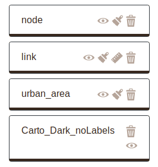
Do it yourself !:
– Click on the link layer and hold it down;
– Drag/drop the link layer and place it in the foreground;
– Release the layer;
– Repeat the same operation with the node layer if necessary.
After that, it can be seen that the layer of links has just been brought to the forefront.
The statistical panel
The right panel is for playing with the flow data sets : the nodes and/or links in order to filter the map with the Add filter button.
The statistics panel describes also the share (as a percentage) of flow information that is represented in the central view, before/after the application of a filter.
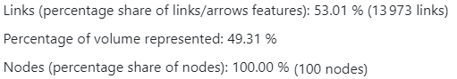
Interpretation:
– for links: 1.3973 links are depicted on the map, i.e. 53.01% of the total number of links, which corresponds to a density (or matrix fill rate) of 53.01%. These links represent 49.31% of the total interaction.
– for nodes: 100% of nodes are represented (here N=100 nodes)
The filters applied are displayed in the second part of the panel, depending on the type of data (continuous, categorical, etc.). See
Filter on a link attribute
See filtering flow data section.